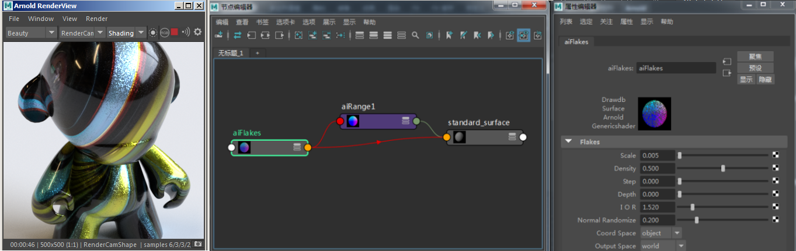

| 延伸阅读 |
|---|
| 有关完整的着色器文档，请参见《Arnold 用户手册》中的小亮片。 |
此着色器会创建可用于汽车涂料等材质的程序小亮片法线贴图。
典型的工作流是将小亮片 连接到 standard_surface.normal_camera 。

小亮片 -> standard_surface 的 normal_camera 和 metalness （通过范围着色器）
您还可以将小亮片着色器的遮罩（Alpha 通道）连接到 mix_shader 来驱动小亮片的不同颜色。例如，您可以使用 mix_shader 将它们混合在一起，让小亮片 呈现金属效果，而其他部分呈现玻璃效果。
Mix_shader 连接到小亮片着色器的 Alpha 遮罩
您可以使用 mix _shader， 将多个具有不同密度 和 normal_randomize 值的小亮片着色器混合在一起。在下面的 car_paint 示例中，使用了第二个小亮片着色器来创建在高光周围可见的更亮的小亮片。
通过 mix_shader 将两个不同的小亮片着色器结合使用。要下载着色器，请单击此处
小亮片着色器使用“步长”(Step)/“深度”(Depth) 属性